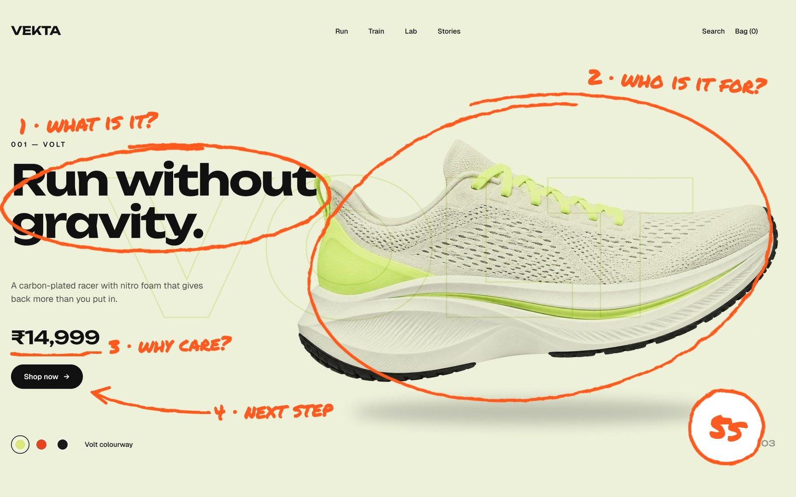
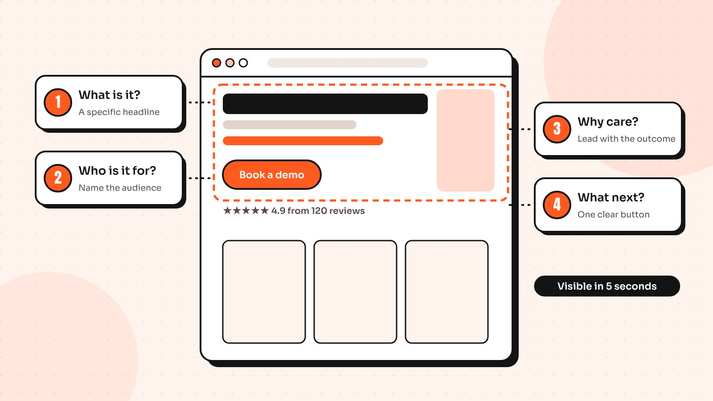

What Visitors Must Get in 5 Seconds on Your Landing Page
Visitors make up their minds before they scroll. Here are the four things your hero section must say in five seconds and a simple way to test it.

Think about how you browse. You click a link, glance at the page and decide almost instantly whether it’s worth your time. Your visitors do the same. Research summarised by Nielsen Norman Group shows that the first few seconds on a page carry the most risk: if people stay past that point, they’re far more likely to keep reading.
That means your hero section, the first screen people see, has one job: make the right visitor want to stay. Everything below it only matters if this part works.
The 4 things visitors must get in 5 seconds

1. What is it?
Visitors need to know what you offer straight away. “The all-in-one platform for modern teams” could describe a thousand products. “Payroll software for restaurants with hourly staff” describes one. Specific beats clever every time.
2. Who is it for?
People stay when they recognise themselves. Naming your audience in the headline or subheading (“for Shopify founders”, “for agencies”) filters out the wrong visitors and pulls the right ones in.
3. Why should I care?
This is the outcome: the result your customer gets. Fewer late shipments, more booked calls, an app that users actually finish setting up. Lead with the outcome, then explain the features further down the page.
4. What do I do next?
One clear primary button with a specific label. “Start free trial” or “Book a demo” works better than “Learn more”, because it tells people exactly what happens when they click. If you have two buttons, make one visually stronger.
How to run a 5-second test
You don’t need special software, although tools exist for it. Here is the simple version I use with clients:
- Show someone your landing page for five seconds, then hide it
- Ask: “What does this company do?”
- Ask: “Who is it for?”
- Ask: “What would you click next?”
- Repeat with four or five people outside your team
If most people answer the first question correctly, your hero is doing its job. If they hesitate, guess or describe the wrong product, the headline needs work. It’s a humbling test and one of the most useful you can run in an afternoon.
Common reasons pages fail the test
- A headline about the company (“We’re passionate about innovation”) instead of the customer
- A huge background image or video that pushes the message below the fold
- Industry jargon that makes sense inside your team but not to a first-time visitor
- Three or four buttons competing for attention
- No proof anywhere near the promise, such as a rating, client logos or a short testimonial

Five seconds is just the start
Passing the 5-second test doesn’t guarantee conversions, but failing it almost guarantees a high bounce rate. Once the hero works, look at the rest of the page: proof, objections and a final call to action. My list of 10 landing page UX fixes covers what to improve next and if you want a fast outside view, see what I check in a 5-minute UX audit.
Send me your screens and I’ll show you where users drop off and what to fix first.
Quick answers
What is a 5-second test in UX?
A 5-second test shows someone a page for five seconds, then asks what they remember: what the product is, who it is for and what they would do next. It checks whether the first screen communicates clearly before visitors decide to leave.
What should be above the fold on a landing page?
A specific headline that says what you offer, a line that names who it is for and the outcome they get, one clear call-to-action button and a small piece of proof such as a rating or client logos.
How many people do I need for a 5-second test?
Five people outside your team is usually enough to spot whether the message is clear. If most of them describe your product correctly, the hero section is working.